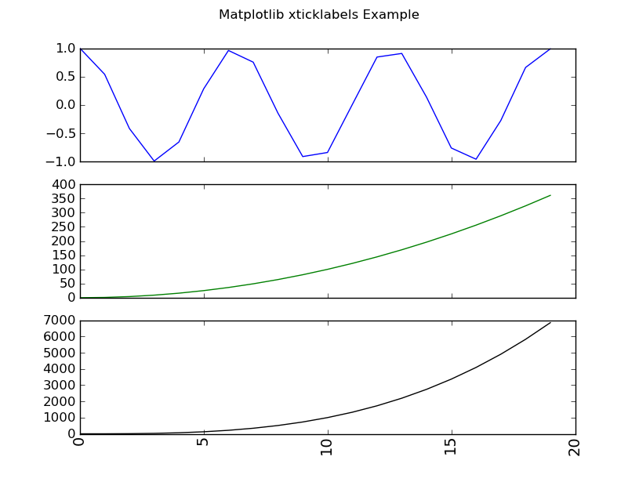

Matplotlib make tick labels font size smaller
In a matplotlib figure, how can I make the font size for the tick labels using
ax1.set_xticklabels() smaller?
Further, how can one rotate it from horizontal to vertical?
Answer
Please note that newer versions of MPL have a shortcut for this task. An example is shown in the other answer to this question: https://stackoverflow.com/a/11386056/42346
The code below is for illustrative purposes and may not necessarily be optimized.
import matplotlib.pyplot as plt import numpy as np def xticklabels_example(): fig = plt.figure() x = np.arange(20) y1 = np.cos(x) y2 = (x**2) y3 = (x**3) yn = (y1,y2,y3) COLORS = ('b','g','k') for i,y in enumerate(yn): ax = fig.add_subplot(len(yn),1,i+1) ax.plot(x, y, ls='solid', color=COLORS[i]) if i != len(yn) - 1: # all but last ax.set_xticklabels( () ) else: for tick in ax.xaxis.get_major_ticks(): tick.label.set_fontsize(14) # specify integer or one of preset strings, e.g. #tick.label.set_fontsize('x-small') tick.label.set_rotation('vertical') fig.suptitle('Matplotlib xticklabels Example') plt.show() if __name__ == '__main__': xticklabels_example()

Suggest
To specify both font size and rotation at the same time, try this:
plt.xticks(fontsize=14, rotation=90)